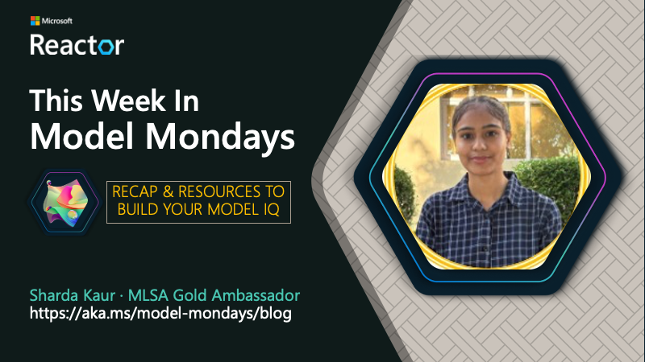
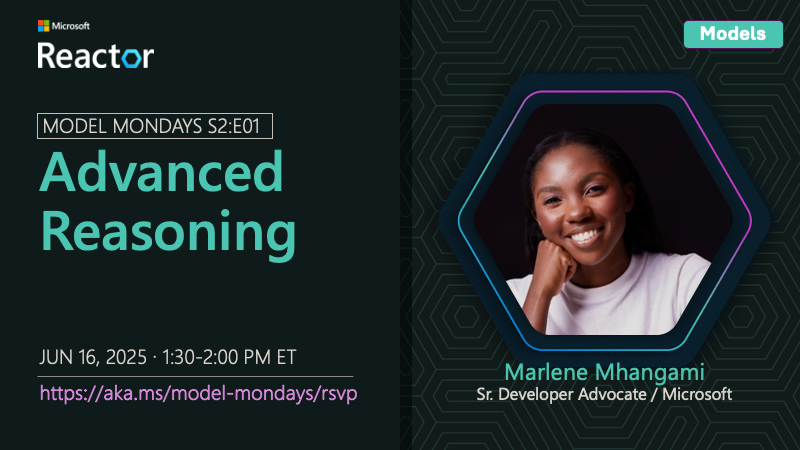
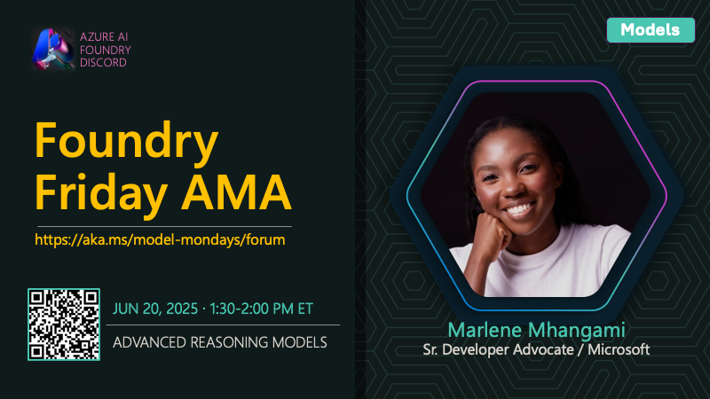
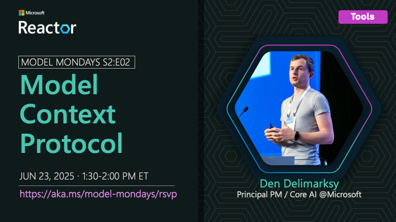
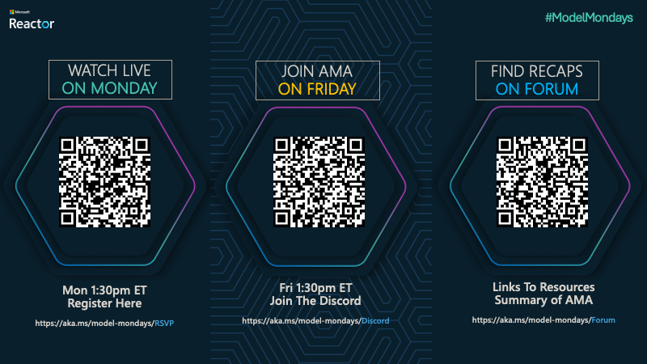

S2E01 Recap: Advanced Reasoning Session
Hello, I'm Sharda, a Gold Microsoft Learn Student Ambassador interested in cloud and AI. You can learn more about my technical background on GitHub and follow my blogging journey on dev.to and Tech Community. In this blog series I'll summarize my takeaways from this week's Model Mondays livestream and leave you with some resources to explore the topic yourself!

About Model Mondays
Model Mondays is a weekly series to help you build your model IQ in three steps: 1. Catch the 5-min Highlights on Monday, to get up to speed on model news 2. Catch the 15-min Spotlight on Monday, for a deep-dive into a model or tool 3. Catch the 30-min AMA on Friday, for a Q&A session with subject matter experts
Want to follow along?
- Register Here - to watch upcoming livestreams for Season 2
- Visit The Forum - to see the full AMA schedule for Season 2
- Register Here - to join the AMA on Friday Jun 20
Spotlight On: Advanced Reasoning
This week, the Model Mondays spotlight was on Advanced Reasoning with subject matter expert Marlene Mhangami. In this blog post, I'll talk about my five takeaways from this episode:
- Why Are Reasoning Models Important?
- What Is an Advanced Reasoning Scenario?
- How Can I Get Started with Reasoning Models ?
- Spotlight: My Aha Moment
- Highlights: What’s New in Azure AI

1. Why Are Reasoning Models Important?
In today's fast-evolving AI landscape, it's no longer enough for models to just complete text or summarize content. We need AI that can:
- Understand multi-step tasks
- Make decisions based on logic
- Plan sequences of actions or queries
- Connect context across turns
Reasoning models are large language models (LLMs) trained with reinforcement learning techniques to "think" before they answer. Rather than simply generating a response based on probability, these models follow an internal thought process producing a chain of reasoning before responding.
This makes them ideal for complex problem-solving tasks. And they’re the foundation of building intelligent, context-aware agents. They enable next-gen AI workflows in everything from customer support to legal research and healthcare diagnostics.
Reason: They allow AI to go beyond surface-level response and deliver solutions that reflect understanding, not just language patterning.
2. What does Advanced Reasoning involve?
An advanced reasoning scenario is one where a model:
- Breaks a complex prompt into smaller steps
- Retrieves relevant external data
- Uses logic to connect dots
- Outputs a structured, reasoned answer
Example: A user asks: “What are the financial and operational risks of expanding a startup to Southeast Asia in 2025?”. This is the kind of question that requires extensive research and analysis.
A reasoning model might tackle this by:
- Retrieving reports on Southeast Asia market conditions
- Breaking down risks into financial, political, and operational buckets
- Cross-referencing data with recent trends
- Returning a reasoned, multi-part answer
3. How Can I Get Started with Reasoning Models?
To get started, you need to visit a catalog that has examples of these models.
- Try the GitHub Models Marketplace and look for the reasoning category in the filter.
- Try the Azure AI Foundry model catalog and look for reasoning models by name. Example:
- The o-series of models from Azure Open AI
- The DeepSeek-R1 models
- The Grok 3 models
- The Phi-4 reasoning models
Next, you can use SDKs or Playground for exploring the model capabiliies.
- Try Lab 331 - for a beginner-friendly guide.
- Try Lab 333 - for an advanced project.
- Try the GitHub Model Playground - to compare reasoning and GPT models.
- Try the Deep Research Agent using LangChain sample as a great starting project.
Have questions or comments? Join the Friday AMA on Azure AI FOundry Discord:

4. Spotlight: My Aha Moment
Before this session, I thought reasoning meant longer or more detailed responses. But this session helped me realize that reasoning means structured thinking — models now plan, retrieve, and respond with logic.
This inspired me to think about building AI agents that go beyond "chat" and actually assist users like a teammate. It also made me want to dive deeper into LangChain + Azure AI workflows to build mini-agents for real-world use.
5.Highlights: What’s New in Azure AI
Here’s what’s new in the Azure AI Foundry:
- Direct From Azure Models - Try hosted models like OpenAI GPT on PTU plans
- SORA Video Playground - Generate video from prompts via SORA models
- Grok 3 Models - Now available for secure, scalable LLM experiences
- DeepSeek R1-0528 - A reasoning-optimized, Microsoft-tuned open-source model
These are all available in the Azure Model Catalog and can be tried with your Azure account.
💡 | Did You Know?
Your first step is to find the right model for your task. But what if you could have the model automatically selected for you based on the prompt you provide?
That's the magic of Model Router - a deployable AI chat model that dynamically selects the best LLM based on your prompt. Instead of choosing one model manually, the Router makes that choice in real time. Currently, this works with a fixed set of Azure OpenAI models, including a reasoning model option. Keep an eye on the documentation for more updates.
Why it’s powerful:
- Saves cost by switching between models based on complexity
- Optimizes performance by selecting the right model for the task
- Lets you test and compare model outputs quickly
Try it out in Azure AI Foundry or read more in the Model Catalog.
Coming Up Next
Next week, we dive into Model Context Protocol, an open protocol that empowers agentic AI applications by making it easier to discover and integrate knowledge and action tools with your model choices. Register Here to get reminded - and join us live on Monday!

👉🏽👉🏽 Join The Community
Great devs don't build alone! In a fast-pased developer ecosystem, there's no time to hunt for help. That's why we have the Azure AI Developer Community. Join us today and let's journey together!
- Join the Discord - for real-time chats, events & learning
- Explore the Forum - for AMA recaps, Q&A, and help!
